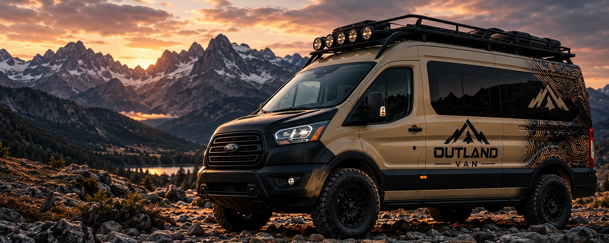
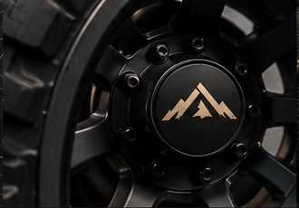
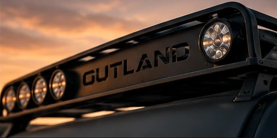

OLTRE
OGNI CONFINE.
Non vendiamo soltanto van camperizzati. Progettiamo la libertà di andare oltre, con mezzi costruiti attorno al tuo modo di vivere il viaggio.
LA GAMMA
OUTLAND.
Tre direzioni di allestimento da cui partire. Ogni progetto può evolvere secondo le tue necessità.
IL TUO VAN.
LE TUE REGOLE.
Partiamo dalle persone, dal tipo di viaggio e dalle esigenze quotidiane. Poi scegliamo insieme il veicolo di partenza più adatto e sviluppiamo la camperizzazione.
DAL SOGNO
ALLA STRADA.
Ascolto
Capire chi sei, dove vuoi andare e cosa ti serve davvero.
Progetto
Definire insieme van di partenza, disposizione degli spazi e soluzioni.
Allestimento
Trasformare il progetto in uno spazio da vivere.
Partenza
Consegna e scoperta del tuo nuovo modo di viaggiare.
PROGETTATI
PER ESPLORARE.
Il nostro immaginario: materiali solidi, linee essenziali, una presenza che non passa inosservata.


